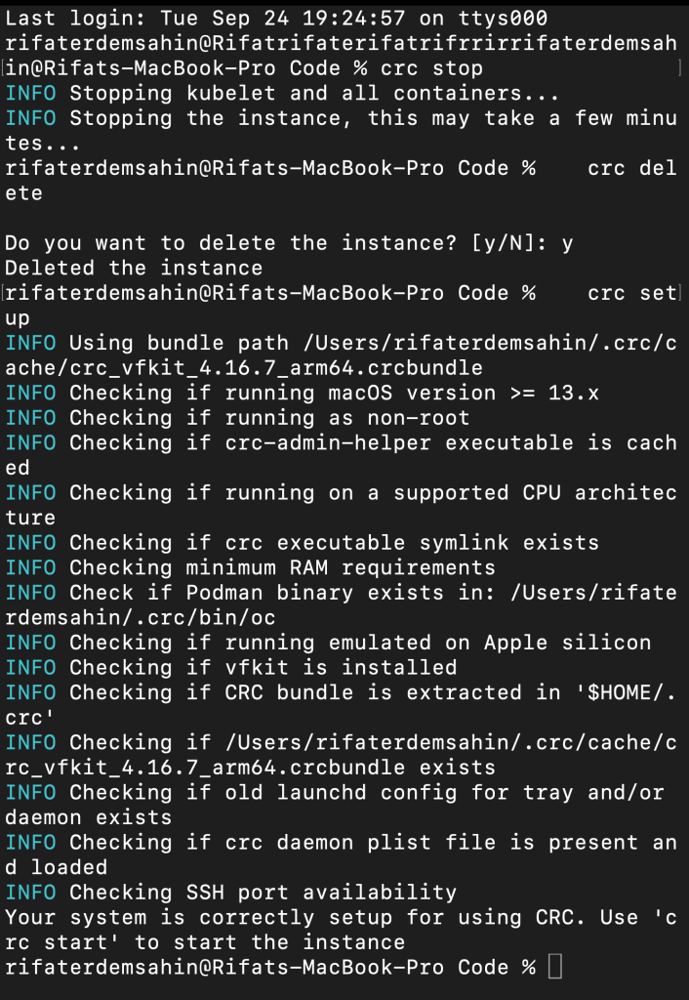
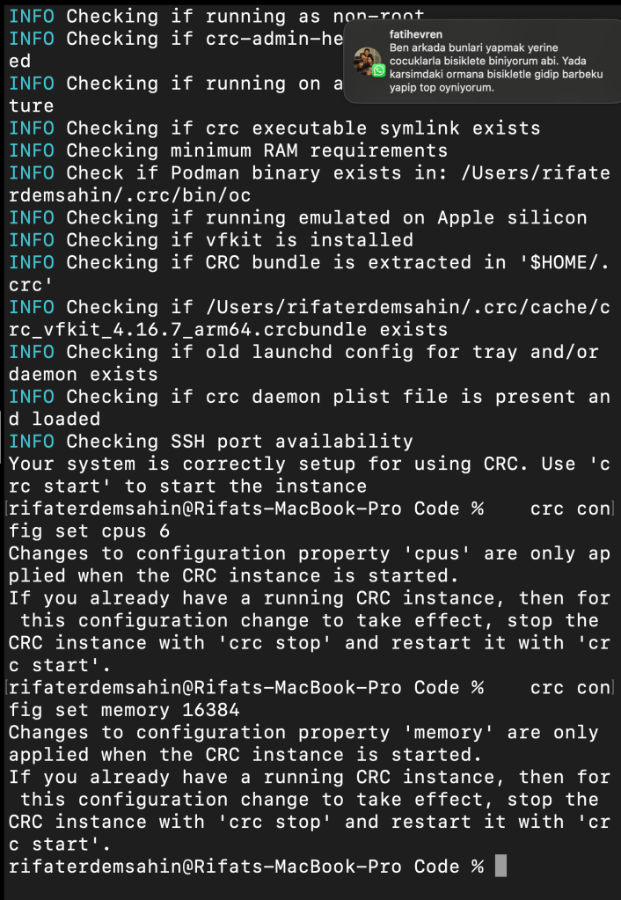
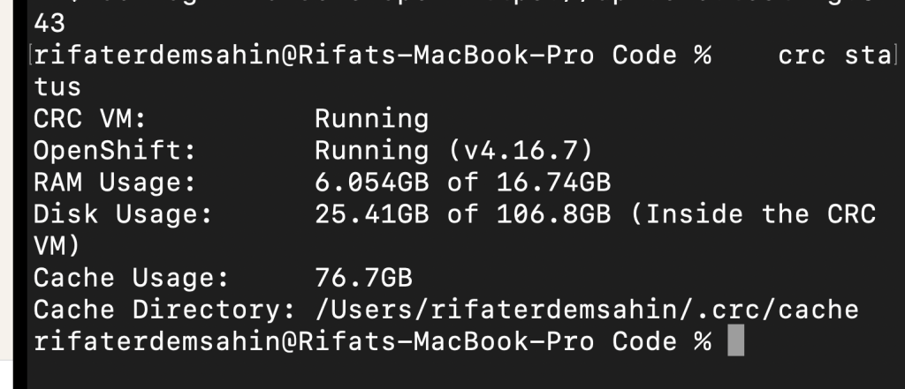
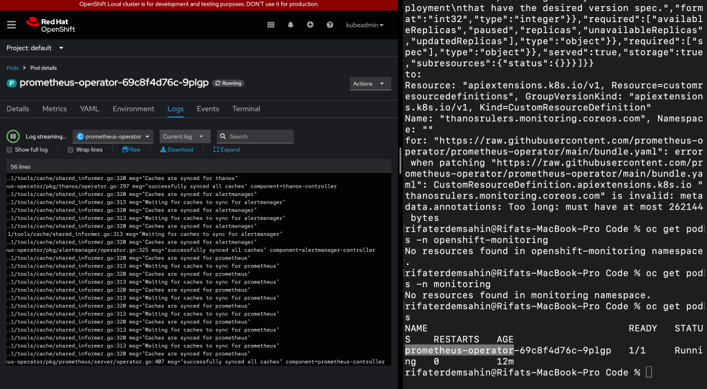
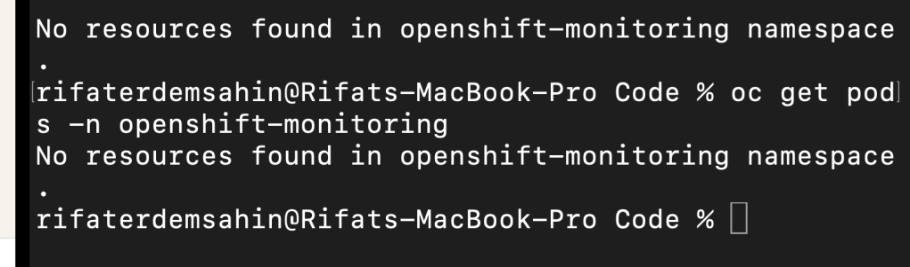
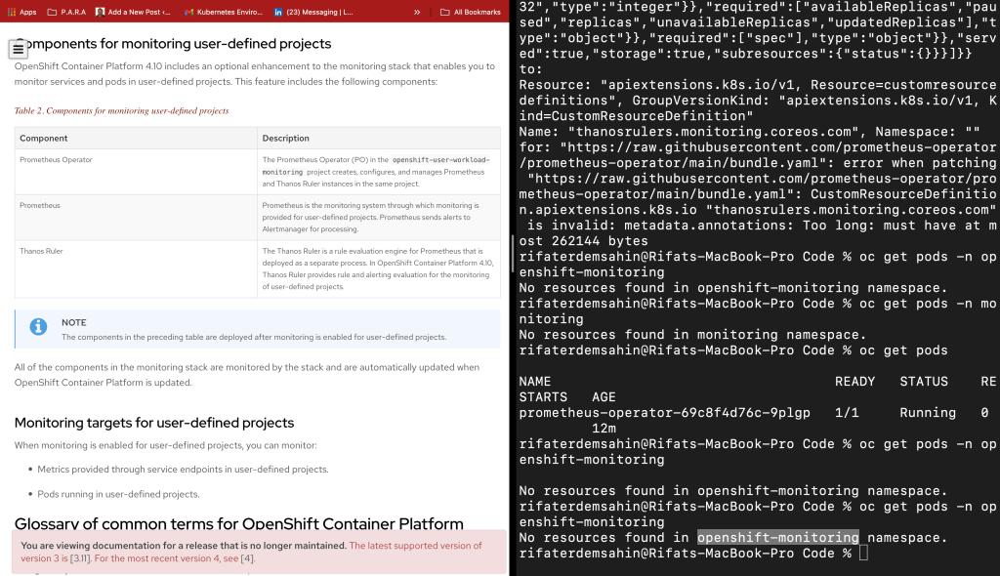
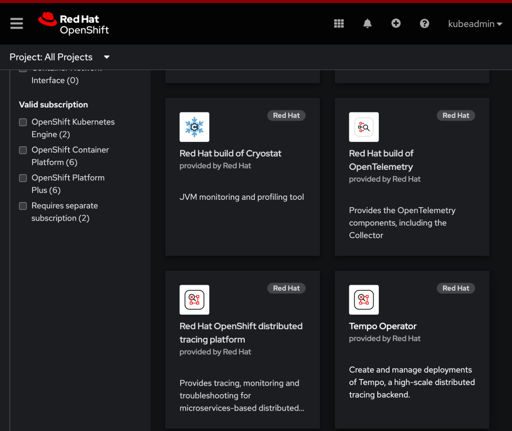

🚀 How to Reset CRC with More Resources for Prometheus and Thanos Installation
If you're working on local development and want to expand the capacity of your CRC (CodeReady Containers) cluster to install monitoring tools like Prometheus and Thanos, this guide is for you. Here’s how you can reset CRC with more resources and install these powerful tools step by step.
🔄 Why Reset CRC?
CRC typically starts with a default configuration that might not provide enough CPU or memory for resource-heavy applications like Prometheus and Thanos. By resetting CRC with additional resources, you’ll ensure smooth installation and functionality of these tools for monitoring and alerting in your cluster.
💡 Steps to Achieve the Goal
- Stop CRC:
First, ensure your current CRC instance is stopped:
crc stop
📝 Screenshot Pause:
Take a screenshot of the terminal showing the crc stop command being executed.
- Reset CRC:
Next, reset the CRC configuration:
crc delete
crc setup

Capture another screenshot of the terminal after resetting CRC to show readiness for new configuration.
- Increase Resources:
Modify the CPU and memory allocation. You can set these values based on your system’s capability:
crc config set cpus 6
crc config set memory 16384
crc config set disk-size 100

Show a snapshot of the resource configuration change for CRC in your terminal.
- Start CRC:
Start the CRC cluster with the new resources:
crc start
📝 Screenshot Pause:
Capture a screenshot to show CRC starting with the updated configuration.
- Verify CRC Status:
Once CRC is running, verify its status and check if the resources have been correctly assigned:
crc status

Another screenshot here will showcase the resource allocation for your CRC cluster.
Here is a working version of how you can deploy Prometheus and Thanos operators using OpenShift (OC). You may need to replace the URLs with actual sources depending on where the Prometheus and Thanos operator YAML files are hosted:
For Prometheus Operator:
If you're using Red Hat's OpenShift, Prometheus might be available through the OperatorHub, so you can install it using the Operator Lifecycle Manager (OLM).
- Install Prometheus Operator via OperatorHub:
oc apply -f https://raw.githubusercontent.com/coreos/prometheus-operator/master/bundle.yaml
Make sure to reference the correct and up-to-date YAML from the official Prometheus Operator GitHub repo.
It looks like the URL you are trying to access does not exist or has been moved. Here's what you can do:
- Prometheus Operator:
You can apply the Prometheus Operator manifest using a reliable source. One of the common repositories is CoreOS or the Red Hat Operator Hub. Example:
oc apply -f https://raw.githubusercontent.com/prometheus-operator/prometheus-operator/main/bundle.yaml
- Thanos Operator:
For Thanos, it looks like the link to thebundle.yamlin the mixin folder is incorrect. Try using the Thanos Operator's actual location or another source like the official Thanos repository. Unfortunately, Thanos does not have a bundled operator YAML in their repository like Prometheus. To deploy Thanos, you'll usually have to set up Prometheus first and then deploy Thanos components individually (like sidecar, query, store). You can follow the guide here for Thanos setup:
https://thanos.io/tip/thanos/getting-started.md/ If you want to install Thanos manually after deploying Prometheus, you can apply each component as needed (e.g., Thanos Query, Thanos Store, etc.).
Let me know if you need specific YAMLs for Thanos components!
🎯 By following these steps, you’ll have successfully reset CRC with more resources, enabling you to install Prometheus and Thanos for monitoring your cluster's performance!
The error message you're encountering, "metadata.annotations: Too long: must have at most 262144 bytes", suggests that the metadata annotations section in the CustomResourceDefinition (CRD) for thanosrulers.monitoring.coreos.com is exceeding the size limit set by Kubernetes for resource annotations (256KB).
Here's an analysis of the issue and potential solutions:
Cause:
-
Kubernetes has a hard limit on the size of metadata annotations in resources, which is 256KB (262144 bytes). The error message indicates that the
metadata.annotationsfield of the CRD exceeds this limit. -
Annotations are typically used to store metadata such as descriptions, versions, or any other extra information about the resource. In this case, it might be that the YAML file you're trying to apply contains too much data in the annotations section, either due to excessive documentation, redundant information, or large encoded data.
Solutions:
-
Trim Annotations:
-
You can review the CRD file (
bundle.yaml) and look for large annotations in themetadata.annotationsfield. -
Remove or reduce unnecessary annotation content that is not crucial for the operation of the resource.
-
Break Down Annotations:
-
If the annotations are necessary but too large, consider breaking them down or moving some of the data into ConfigMaps or external documentation to reduce the load on the annotation field.
-
Apply the CRD Without Annotations:
-
Temporarily remove or comment out the
metadata.annotationssection in the CRD YAML file and try applying it again. If the CRD works without these annotations, you can gradually add necessary annotations back within the size limit. -
Use a Different Mechanism for Storing Metadata:
-
If the large annotations are crucial for functionality (e.g., storing configuration data), consider using a different Kubernetes resource like a
ConfigMaporSecretto store that information instead of placing it directly into the annotations field.
By addressing the size of the metadata.annotations field, you should be able to resolve the error and apply the CRD successfully. Let me know if you'd like guidance on editing or inspecting the specific CRD file.
🔗 Connect with me:
🛠️ Pro Tip: Keep your CRC resources flexible based on the needs of the applications you are running. Regular monitoring with Prometheus and Thanos will help identify if further resource adjustments are needed!
Analyse
The file you uploaded seems to contain information related to Kubernetes custom resource definitions (CRDs) and role bindings related to the Prometheus Operator. Here’s a brief analysis of the content:
-
Custom Resource Definitions (CRDs):
-
PodMonitors, Probes, PrometheusRules, ServiceMonitors: These are CRDs that are part of the Prometheus monitoring stack, which allow for configuring how Prometheus monitors various aspects of Kubernetes workloads (pods, services, etc.). They all remain unchanged, indicating no updates were applied.
-
Cluster Role and Role Bindings:
-
prometheus-operator: These resources define the permissions for the Prometheus Operator to interact with Kubernetes resources. Both the cluster role and cluster role binding for the Prometheus Operator remain unchanged.
-
Deployment:
-
prometheus-operator: The deployment of the Prometheus Operator also remains unchanged, suggesting that there were no updates to the Prometheus Operator deployment in the cluster.
-
Service Account and Service:
-
Both the service account and the service associated with the Prometheus Operator are also listed as unchanged.
Interpretation
This output suggests that the Prometheus Operator setup in your Kubernetes cluster did not experience any changes during the applied operations (e.g., an update or reconfiguration attempt). Everything remains in its previous state, meaning no new deployments or changes to roles, bindings, or CRDs were required during this run.
To view Prometheus on your OpenShift cluster, follow these steps:
1. Ensure Prometheus is Installed
Prometheus can be installed either through the OpenShift monitoring stack or manually via operators. If using the OpenShift monitoring stack, Prometheus is typically installed as part of the cluster-monitoring operator.
To verify Prometheus is installed:
- Check for Prometheus Pods: Run the following command to list Prometheus-related pods:
bash oc get pods -n openshift-monitoring
Look for pods with names likeprometheus-...orprometheus-operator.

2. Access Prometheus in OpenShift
Option 1: Using the OpenShift Web Console
-
Step 1: Log in to the OpenShift web console.
-
Step 2: Navigate to the Administrator view.
-
Step 3: Go to Monitoring > Metrics.
This should show the Prometheus UI where you can query for metrics.
- Step 4: Alternatively, go to Monitoring > Dashboards to see the pre-configured dashboards (like node or pod monitoring).
If you do not see the "Monitoring" option in the OpenShift web console, there are several possible reasons:
-
Monitoring Components Not Installed: OpenShift uses the Prometheus stack for monitoring, but the monitoring components (Prometheus, Grafana, etc.) might not be installed. Ensure that the OpenShift Monitoring Operator is installed and configured correctly.
-
User Role and Permissions: Access to the monitoring UI may be restricted based on user roles. Only administrators or users with appropriate permissions can see the "Monitoring" section. Verify that your user has the necessary permissions to view monitoring data.
-
Cluster Configuration: If you are using a local development environment like CRC (CodeReady Containers) or a limited OpenShift environment, monitoring might be disabled to reduce resource usage. In this case, you can enable monitoring by configuring the cluster monitoring settings.
-
UI Version or Customization: Sometimes, the OpenShift web console might not display the monitoring option due to customization or specific configurations. Make sure you are using the Administrator view and check if the web console is updated to the latest version.
You can also check the status of the OpenShift monitoring stack by running the following commands to see if the Prometheus and Grafana pods are running:
oc get pods -n openshift-monitoring
If the monitoring stack is not running, you may need to troubleshoot and configure the OpenShift Monitoring Operator.


https://docs.openshift.com/container-platform/4.10/monitoring/monitoring-overview.html
Option 2: Access Prometheus Directly via Route
If Prometheus is installed and exposed via a route, you can access it by:
-
Step 1: Create a route for the Prometheus service:
bash oc expose svc prometheus -n openshift-monitoring -
Step 2: Get the route URL:
bash oc get route prometheus -n openshift-monitoring -
Step 3: Open the URL in your browser, and you should be directed to the Prometheus web interface.

Option 3: Port Forward to Prometheus Service
If there’s no route configured, you can use port forwarding to access Prometheus locally:
-
Step 1: Run the port-forward command to expose the Prometheus service:
bash oc port-forward svc/prometheus-k8s 9090:9090 -n openshift-monitoring -
Step 2: Open
http://localhost:9090in your browser to access Prometheus.
3. Using Prometheus
Once you have access to the Prometheus UI, you can:
-
Query Metrics: Use PromQL to query metrics.
-
Visualize Data: Prometheus provides basic visualizations, but you can also integrate with Grafana for more advanced dashboarding.
By following these steps, you should be able to view and interact with Prometheus on your OpenShift cluster. Let me know if you need help with any specific configurations or queries!
Imported from rifaterdemsahin.com · 2024